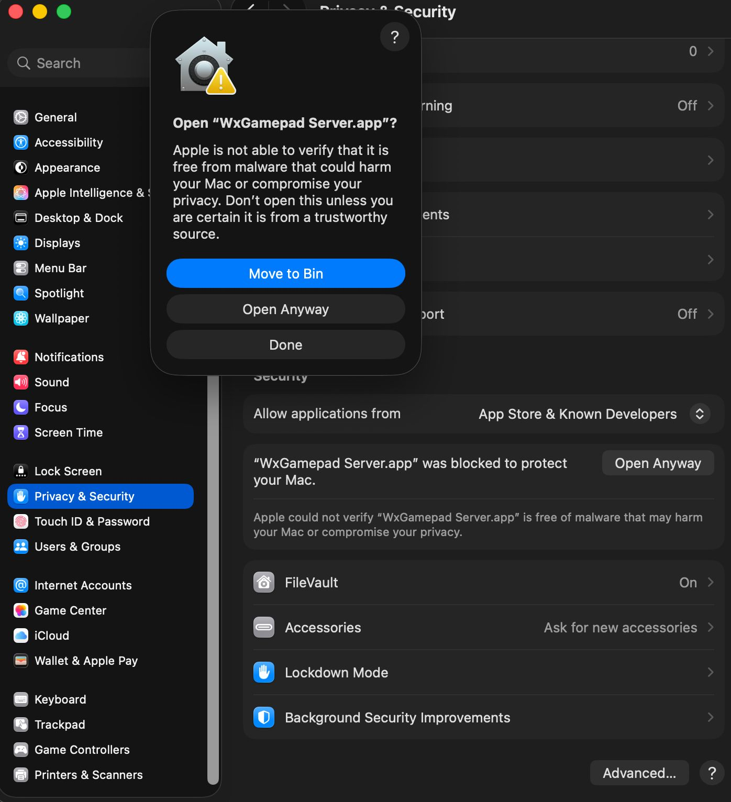

The WxGamepad Server is a small app that runs on the computer you want to control. Start it once, scan the QR code it shows from the WxGamepad app on your phone, and your phone becomes a controller. Pick your operating system below.
ℹ️ Why does my computer warn me? The server isn't yet signed/notarised by Apple or Microsoft, so the first time you open it your OS shows a security warning. This is expected for new indie software — the steps below show the safe, one-time way to allow it. You only need to do this once.
1. Download the server
Grab the latest build from the releases page, then follow the steps for your OS.
macOS
On macOS, the server opens after you allow it once in System Settings → Privacy & Security.
- Open the downloaded
.dmgand drag WxGamepad Server into your Applications folder. - Double-click WxGamepad Server. You'll see "Apple is not able to verify…". Click Done (do not click "Move to Bin").
- Open the Apple menu → System Settings → Privacy & Security, and scroll down to the Security section.
- You'll see "WxGamepad Server.app was blocked to protect your Mac." Click Open Anyway, then confirm with Touch ID or your password.
- A final dialog appears — click Open Anyway once more. The server launches and will open normally from now on.

Prefer the Terminal? This clears the quarantine flag so the app opens directly:
xattr -dr com.apple.quarantine "/Applications/WxGamepad Server.app"Then double-click the app as usual.
🪟 Windows
Windows SmartScreen blocks unrecognised apps on first run. Allow it like this:
- Run the downloaded WxGamepad Server (
.exe). - If you see "Windows protected your PC", click More info, then Run anyway.
- If the file came in a
.zip, right-click it first → Properties → tick Unblock → OK, then run. - When Windows Firewall asks, Allow access on Private networks so your phone can connect over Wi-Fi.
🐧 Linux
The server ships as an AppImage. Make it executable and run it:
chmod +x WxGamepad-Server-*.AppImage
./WxGamepad-Server-*.AppImage- You can also right-click the file → Properties → Permissions → Allow executing as program, then double-click it.
- If it complains about FUSE, install it (
sudo apt install libfuse2on Debian/Ubuntu) or run with--appimage-extract-and-run. - If you use a firewall (e.g.
ufw), allow the local port the server listens on so the phone can reach it.
2. Connect your phone
- Make sure your phone and computer are on the same Wi-Fi network.
- The running server displays a QR code (and an IP address).
- Open WxGamepad on your phone, tap connect, and scan the QR code. You're now a controller. 🎮
Still stuck? Contact support and we'll help you get connected.